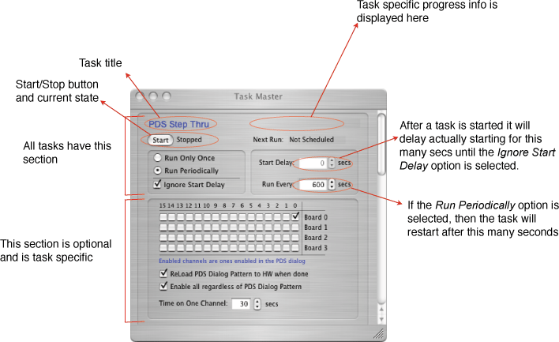

ORCA has a general-purpose scheduling object that allows objects to post tasks for execution. Tasks can be scheduled to run immediately or after a specified delay and can be repeated at specified intervals.
ORCA has a general-purpose scheduling object that allows objects to post tasks for execution. Tasks can be scheduled to run immediately or after a specified delay and can be repeated at specified intervals.

There are no ORCA generic tasks at this time. One of the objects that registers tasks is the NCD experiment object.